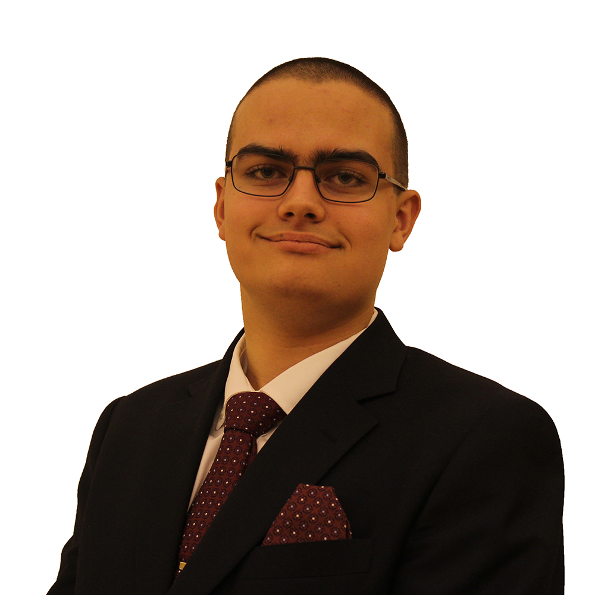

Jan Sedlacek
Secretary General
Greetings Distinguished Delegates, Honorable Student Officers, Esteemed Directors and Guests,
My name is Jan Sedlacek and this year, I have the absolute honor of serving as the Secretary General for the Fourth Annual ISLMUN Conference. My MUN journey started almost three years ago, in late 2015, when I joined the MUN club as a complete stranger to the idea of ever attending a conference. Yet after a few sessions, I was hooked, and have since taken part in 15 conferences. Being a Delegate of countries ranging from Chad to the United Kingdom, repeatedly chairing Security Council at local and international conferences and serving as the President for the Third Annual ISLMUN conference, my passion and enthusiasm for MUN has grown by the minute and now, I am reaching perhaps the pinnacle of my MUN journey. I feel that MUN is something very important for high school students to experience, because not only does it expand on critical thinking, negotiation and public speaking skills, it also prepares students for the challenging task of being the agents of change of tomorrow. Taking upon the role of a delegate and representing a country different to your own broadens your awareness of global issues, understanding of various policies, but it also provides a unique perspective on global cultural, political, economic and social interactions, which is something paramount that leaders of an increasingly globalized world will require. As part of this conference, my role is to coordinate most of the planning processes and then make sure that everybody performs their roles accordingly on the conference days. I also work alongside the remainder of the Big 4 to ensure that all content and logistics related matters are carried out well and on time. My personal goal is to make sure that ISLMUN continues growing and becomes one of the major conferences in Qatar that delegates from all around the country will want to attend, as well as that their experience is a professional and an unforgettable one.
I am looking forward for seeing you at the conference!
Conference Count: 15
Abdulla Al-Rumaihi
Deputy Secretary General
Why, hello there!
My name’s Abdulla Al-Rumaihi and I’ll be your Deputy Secretary General for ISLMUN ’18. I’ve been doing MUN for the past 3 years as a delegate and Head of Admin for our conference last year.
I believe MUN everyone should do MUN because of its ability to develop people both academically and socially. It introduces you to topics you might not necessarily have heard of in school or through your own reading, and it forces you to think critically and through various perspectives. It also allows you to interact with new people and develop your negotiation and social skills, both vitally important for all your future endeavors.
As DSG, I will be aiding the Secretary General and Head of Admin in overseeing and ensuring logistical perfection, and making this experience as stress-free and enjoyable for everyone. For first-timers, I hope we can provide you with an experience you can cherish forever; for returning delegates, I hope to hear fruitful, engaging debates.
Peace.
Conferences attended: 6
Ghassan Younés
Head of Press
Hello, people, look at your friend, now back to me, now back at your friend, now back to me. Sadly, that person isn’t me, but if they’re here with you at ISLMUN, and switched to Old Spice, he could smell like he’s me. (Wait… That’s not it) The mitochondria is the powerhouse of the- (wait, no, that’s my science essay. Hmmm. Here we go!) I'm Ghassan Younés, head of the Press team at ISLMUN. This is my second year in press team, in which I hope to document the exciting and eventful happenings of ISMUN 2017. As head of press, I work hand-in-hand with Noorin in Videography. Look down, back up, where are you? You’re on a website and nothing has changed, the Old Spice guy couldn’t make it. That’s too bad, MUN represents so many great things and provides so much experience in life. What’s in your hand, look back at me. I have it, it’s an oyster with two tickets to that thing you love (ISLMUN, I hope). Look again, the tickets are now pens scribbling away at interesting debate topics (Jan, am I doing this right?!) Anything is possible when you’re at ISLMUN and you have Ghassan Younés as head of Press. I’m on a horse.
Marzia Foglietti
Head of Admin
Hello! I'm Marzia, 17, Italian and Head of Admin at the ISLMUN. MUN is a fun and exciting way to learn about current affairs, international disputes, and creating resolutions to solve the world's greatest issues. MUN also has you developing leadership, communication and public speaking skills, with the extra factor of meeting people from all over the country and creating a network of MUN alumni with whom you can share your common interests.
I have been to three MUN conferences, twice as delegate and once as admin. After my last one, I fell in love with the executive element of a conference, and it led me to acquire the position of Head of Admin. My role is training admins to assure that your conference runs as smoothly as possible, and dealing with the administrative side of the event. My goals for the ISLMUN 2017 conference are a great and unforgettable conference that runs smoothly, everyone having a great and enjoyable time, and getting the best food first.
If you want to contact me, I will be the one bossing around the minions in the ugly orange shirts.
Toodles.
Mohammed Talballa
Vice Head of Chair Training and ICJ Coordinator
Hello, my name is Mohammed Talballa and I will be serving as Vice Head of Chair Training and ICJ Coordinator for the Fourth Annual ISLQ Model United Nations Conference. Grown out of a love for politics and suits, my journey with MUN has been short, yet momentous. Undertaking the representation of Delegations for New Zealand, Egypt, ad Indonesia, and a Chairing Position for the Security Council – I have come to gain a substantial understanding of the elements that have developed MUN into the collective powerhouse of debate and awareness that it is today, an understanding that will most certainly assist me in my duty as responsible officer for the training of capable chairs – and as the collaborative organizer for the first ever International Court of Justice in an ISLQ MUN conference. With the hope that the coming conference will prove to be an insightful and joyous event, were participants will come to broaden their social circles and understandings of pressing global issues; I look forward to rejoicing with fellow students of Doha in two days that will exhibit the many graces of MUN.
Conferences Attended: 4
Noorin Iqbal
Head of Videography
Lights. Camera. Action!
ISLMUN 2018 is going to be my second MUN conference, with the first one being ISLMUN 2016, where I attended as a Press Team member. MUN is a platform for me to enhance, express and exhibit my filmmaking skills, as the Videography Team’s Head. It also allows me to strengthen and broaden my leadership qualities, and adds to my collaboration and co-operation abilities with different members and delegates. Being the Videography Team’s Head, it is my duty to ensure the three videos for ISLMUN 2018 are polished of high quality, informative and engaging shots. These will reflect the development of our team’s performance in filmmaking. For ISLMUN 2018, I aim to produce conference related videos that portray the best potential of the Videography team on the tightest schedule, with rigorous dedication and teamwork.
Aaaaaaand, CUT!
Conferences Attended: 1
Rahema Velmi
Deputy President
Hey guys!
My name’s Rahema (Ra-him-a) Velmi. If you successfully made it past trying to pronounce my name correctly, it is a pleasure for me to introduce myself as the Deputy President for ISLMUN 2017-18! Although my time at the International School of London has been short-lived, I have been actively involved in MUN for the past four years, with a very diverse and stimulating experience thus far. From serving on the Executive Team at the Qatar Leadership Conference as Conference Coordinator, to setting up my own initiative at Pakistan International School in launching their own MUN club – and now, with this opportunity, I’m thoroughly excited to be working alongside a dynamic team in the build up to and beyond our conference. As Deputy President, my responsibilities entail the training of all new delegates into the realm of Model United Nations whilst ensuring that they are well equipped with the necessary skills and knowledge to succeed in their MUN journey’s.
I look forward to incorporating my prior experience to ISLMUN as a means of foregrounding it as a source of interactivity, a base for new connections to form and a platform to voice for the betterment of positive change.
I hope to see as many of you at our conference in 2018! ‘Til then, adios.
Conferences Attended: 18
Rhea Sharma
President
Former Secretary-General Daj Hammarskjold once stated, "Everything will be all right when people stop thinking of the United Nations as a weird Picasso abstraction." I began my MUN journey as a 13 year old when my school director almost forcefully convinced me that it would be good for me. It was only when the delegate of Lithuania yielded the floor to me at my first conference, that I spoke, unknowing that I had the option to refuse! 14 conferences and 3 years later, MUN is no longer “a weird Picasso abstraction.” It is a drawing I made myself.
As President of ISLMUN, I ensure quality of content. I formulate (and hopefully, you agree) accessible yet stimulating issues. I select and train chairs to maintain quality debate and decorum in committees (should they fail to do so, #considerthemdead). And, I continuously nag them (they hate me, and I love it) to make certain that their research reports encapsulate the complexity of issues of global importance.
More than anything, I hope you take something from ISLMUN: an improved understanding of multilateral diplomacy, the ability to critically think to create innovative solutions, or even an ignited interest – no, not an interest in hopeless puns, or “funny” (but not so funny) pick-up lines, that is definitely not what I mean.
MUN allows students to “to do together, what cannot be achieved separately;” to learn, to understand and to strengthen our individual capacities, together. It is a platform for the youth to be active global citizens and commit to real life problems. Herein, the future engages with the present. That, makes MUN worthy of the confusion of the first-timer, the all-nighter of the procrastinator and the extreme preparation of the worrier. Most importantly, I hope ISLMUN embodies that worthiness (and not just for the food).
Conferences Attended: 14
Saidatul Zairin
ICJ President and Coordinator
Hello everyone! My name is Saidatul Zairin and I will be serving as the ICJ President and Coordinator for the ISLMUN 2018. I have been part of MUN for the past three years, with experience as delegate, ICJ advocate, judge and chair. Over the years, MUN quickly turned from something I did for the prestige of it, to something I place my heart and soul into. I believe everyone should attempt to experience MUN at least once, because not only do you get a scope on the world we live in today, but you also develop a broad range of skills while having a laugh and forming new friendships.
As the President and Coordinator of the ICJ, I have been working rigorously alongside my Vice President to plan and ensure that ISL Qatar’s first ever International Court of Justice is one for the books! I will also be mentoring both ICJ advocates and judges, and moderating the ICJ hearing on conference day. So advocates and judges, you’re about to have a once-in-a-lifetime privilege of spending much of your time with yours truly!
I hope that the 4th Annual ISLMUN Conference will be one where first-timers feel welcome and unintimidated, but at the same time, be stimulating and challenging for the more experienced delegates. More than anything however, I want the first ever ICJ to be the one to harness passion for international law, and the one advocates and judges would want to return to. I don’t promise a smooth-sailing two-days (and by that, I mean I can’t guarantee that no one will come running out crying) but I hope that even when everything goes wrong, we will pull through together as a unit.
Until then, I’ll continue to look forward to working with each one of you!
Conferences Attended: 9
Sarah Doshi
Head of Admin Shadow
Hello, my name is Sarah Doshi and I serve as the Head of Admin Shadow through 2017-2018. The reason I joined MUN last year is because I wanted to broaden my critical thinking skills and get involved in discussions/debates about other nations. Model United Nations has helped me in not only my debating skills but also my researching and speech writing skills. It helped me look at issues in different perspectives and come up with resolutions that could help the future. Being able to be a part of the Executive Team is an honor and my job is to ensure that ISLMUN conference is the best it can be.